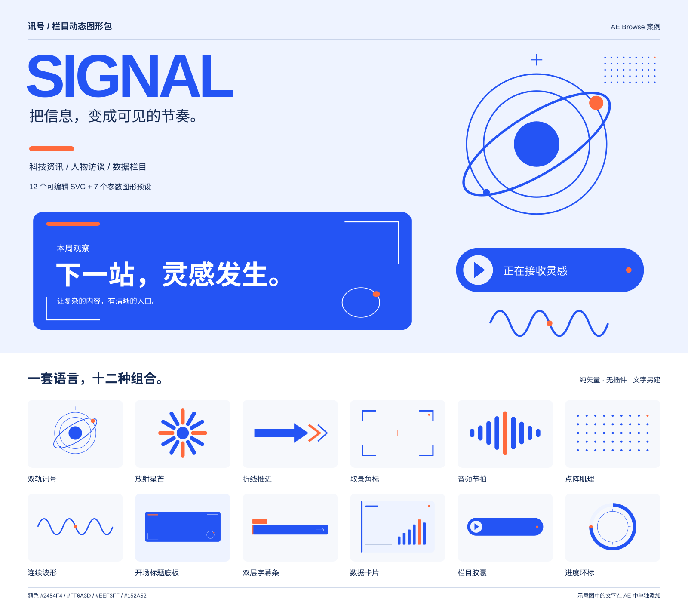

<!doctype html><html lang="zh-CN"><meta charset="utf-8"><meta name="viewport" content="width=device-width,initial-scale=1"><title>讯号 SIGNAL 图形包案例</title><style>*{box-sizing:border-box}body{margin:0;background:#dce5f4;color:#152a52;font:16px/1.6 "Microsoft YaHei",sans-serif}main{max-width:1600px;margin:auto}img{display:block;width:100%;height:auto}footer{padding:24px 4%;background:white}a{color:#2454f4}a:focus-visible{outline:3px solid #ff6a3d;outline-offset:4px}p{margin:8px 0}</style><main><footer><p>在 AE Browse 中添加本目录，使用 7 个参数预设；添加 <a href="svg/">svg 子目录</a>，使用 12 个复合图形。</p><p><a href="README.md">查看使用说明和入场节奏建议</a>。素材不含文字，示意标题在 AE 中另建。</p></footer></main></html>